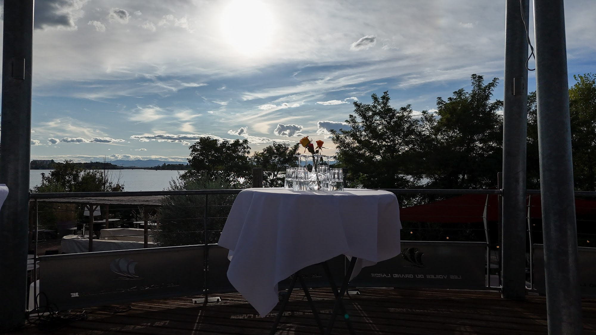
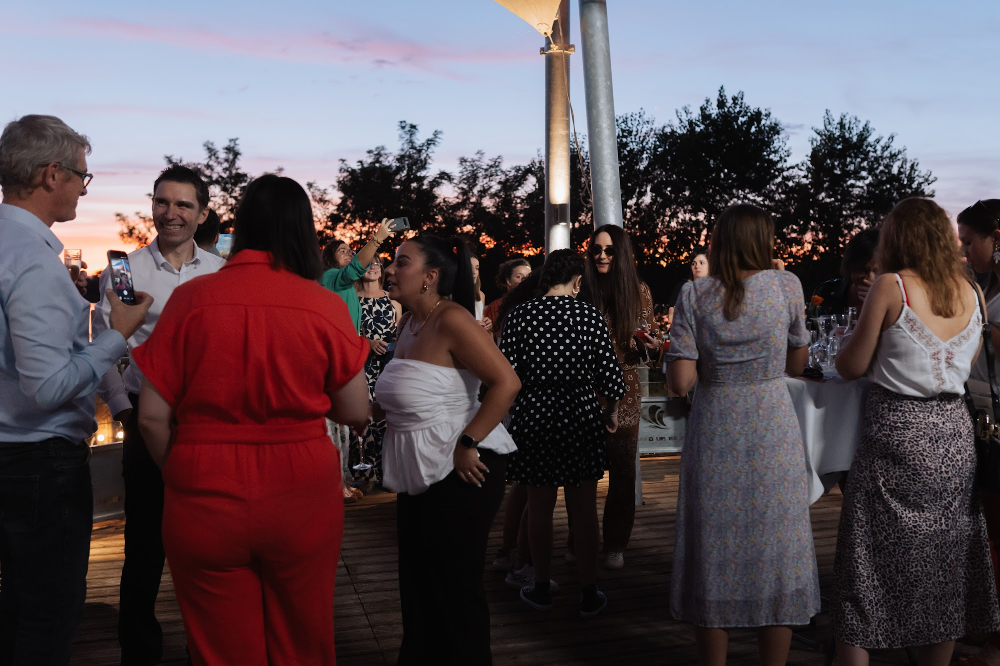
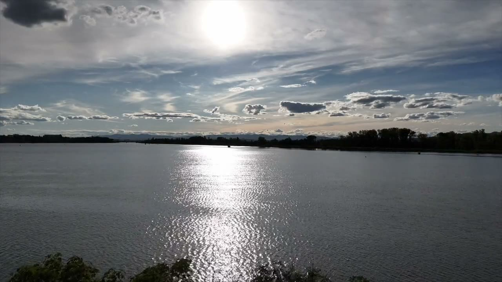
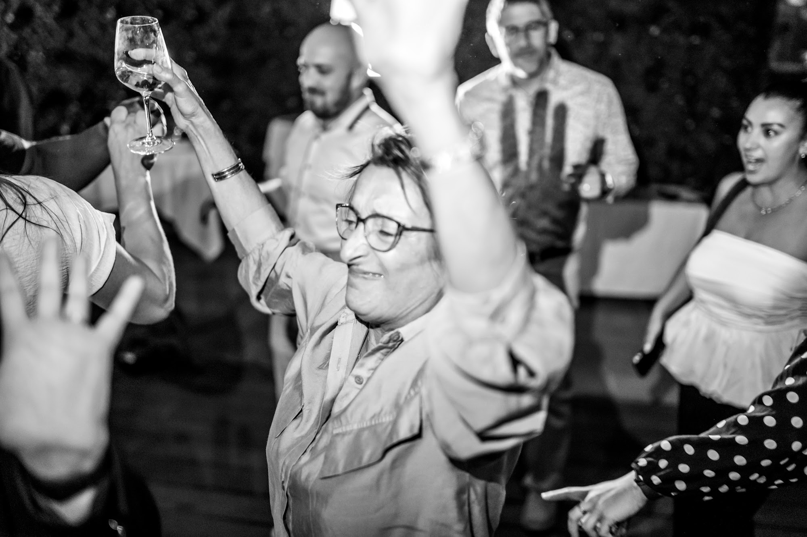
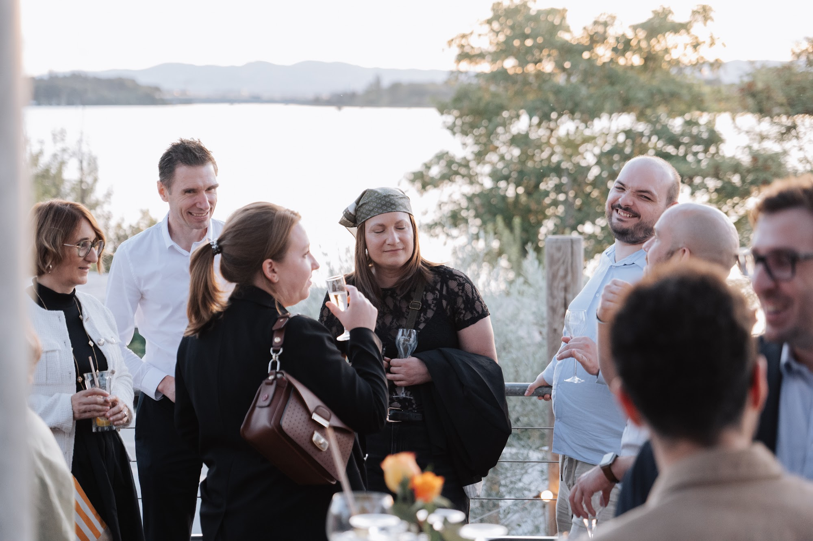
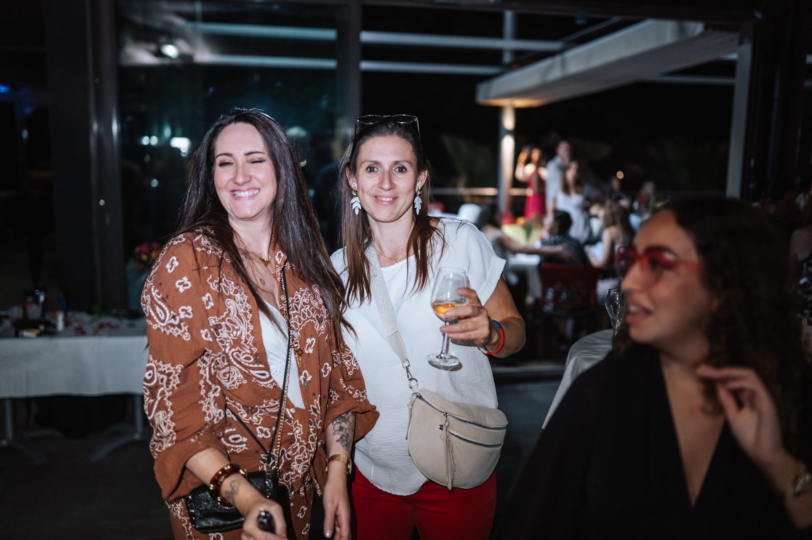
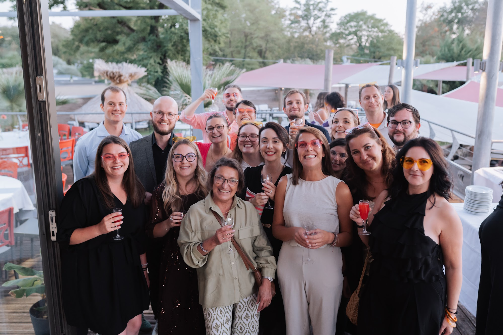
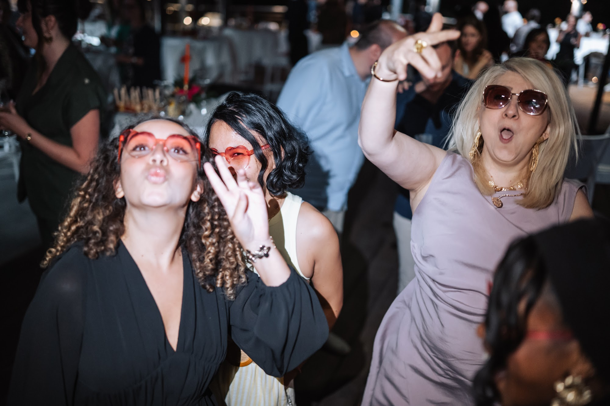
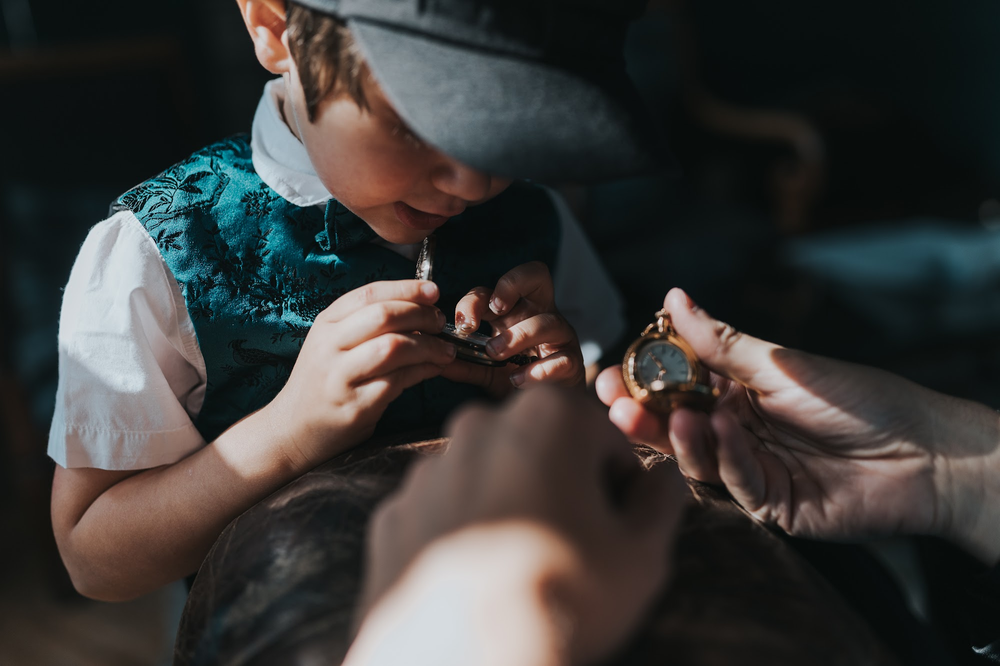

Photographe vidéaste de séminaire à Lyon
Séminaires, soirées d’entreprise, salons, team building, inaugurations : je photographie et je filme vos événements professionnels à Lyon et partout en France. Des images vivantes, prises avec discrétion, pensées pour votre communication interne, vos réseaux et votre marque employeur.

Des images qui montrent l’énergie de vos équipes
Un bon reportage d’entreprise ne ressemble pas à une photo de groupe figée. Il montre les échanges, la concentration pendant un atelier, les rires au cocktail, l’ambiance de la soirée. Je me fonds dans l’événement pour capter ces moments sans interrompre le programme.
Je ne fais rien rejouer : vos collaborateurs restent à l’aise, et les images restent naturelles.

Vidéo : aftermovie, interviews et témoignages
Un aftermovie de quelques minutes permet de faire revivre l’événement et de le partager en interne comme sur LinkedIn. Je peux aussi réaliser des interviews de participants ou d’intervenants, pour donner la parole à ceux qui font votre entreprise.
Photo et vidéo peuvent être réunies : un seul prestataire, une même direction artistique, et une organisation plus simple pour vous.

Tous vos formats d’événements
Séminaires et conventions, soirées de fin d’année et galas, salons et congrès, team building, inaugurations et lancements de produit, conférences : chaque format a ses temps forts, que nous repérons ensemble avant le jour J.
En complément, je réalise des portraits professionnels pour vos équipes, des films de marque et des photos de produits, pour que votre communication garde une même qualité d’image.

À Lyon et partout en France
Je suis basé près de Lyon et j’interviens dans toute la région Auvergne-Rhône-Alpes : Lyon, Villeurbanne, Vienne, Grenoble, Annecy, Saint-Étienne. Je me déplace aussi partout en France pour vos séminaires et conventions.
Les conditions d’utilisation des images (communication interne, réseaux sociaux, publicité) sont précisées dans le devis, pour que vous puissiez les exploiter en toute sérénité.





Comment ça se passe
- Vous m’envoyez le programme, le lieu et vos objectifs de communication.
- Nous repérons ensemble les temps forts et les images indispensables.
- Vous recevez un devis clair, avec les conditions d’utilisation des images.
- Le jour J, je couvre l’événement avec discrétion.
- Vous recevez les photos et la vidéo en haute définition, prêtes pour vos supports.
Questions fréquentes
Combien de photos recevons-nous pour un séminaire ?
Cela dépend de la durée et du programme. Je trie et je retouche une sélection qui raconte tout l’événement, sans doublons. Le volume indicatif est précisé dans le devis.
Pouvez-vous livrer rapidement quelques photos pour nos réseaux ?
Oui, une petite sélection peut être préparée en priorité si vous souhaitez communiquer pendant ou juste après l’événement. Il suffit de le prévoir dans le devis.
Pouvons-nous utiliser les images pour notre communication ?
Oui. Les usages autorisés (interne, réseaux sociaux, site, publicité) sont définis dans le devis selon vos besoins.
Vous déplacez-vous en dehors de Lyon ?
Oui, dans toute la région et partout en France. Les éventuels frais de déplacement sont indiqués clairement.
Vous préparez un séminaire, une soirée ou un salon ? Envoyez-moi votre programme, je vous réponds rapidement.